财富如潮水般涌入港口，铸就了人类历史上第一个日不落帝国。
黄金之光照亮了西班牙的世纪。
然而，任何极致的光芒，都必定投下同样深长的阴影。
从黄金的光
到帝国的灰
第一个日不落的诞生与衰落
欧洲大陆的古老野心，在伊比利亚半岛的金色阳光下被点燃。他们带着十字架和渴望，驾驭风暴，航向未知的西方。这不是一次寻常的远航，而是一场赌上一切的命运之战。
当新世界的海岸线在烟雾中显现，他们追逐着东方传说中的丝绸和香料
——却带回了更具震撼性的馈赠：无尽的黄金与白银。
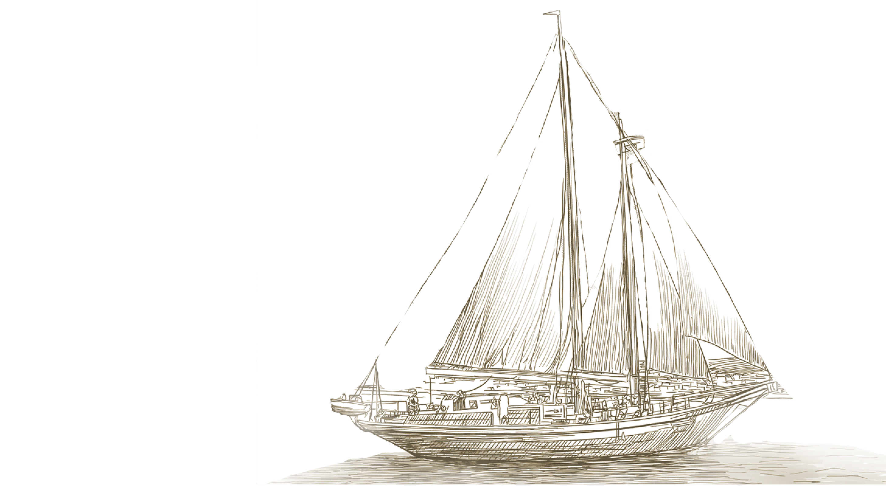
1492
海洋不再是尽头，而是通道

以征服为名的开始
在十五世纪的尾声，世界图景尚未完成。
在伊比利亚半岛，一个王国决定不再等待，他们把赌注押在了海洋的另一端。
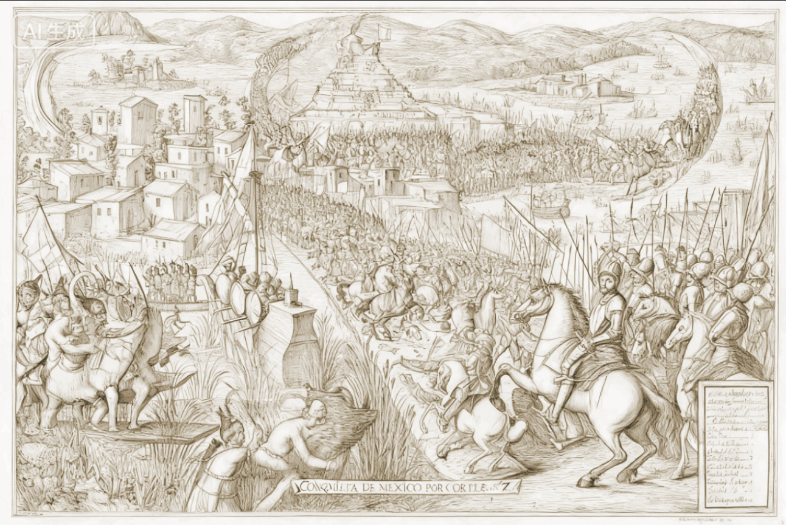
西班牙的舰队沿着未知的洋面前进，从安达卢西亚的港口出发，穿过无风带与信仰的黑夜。
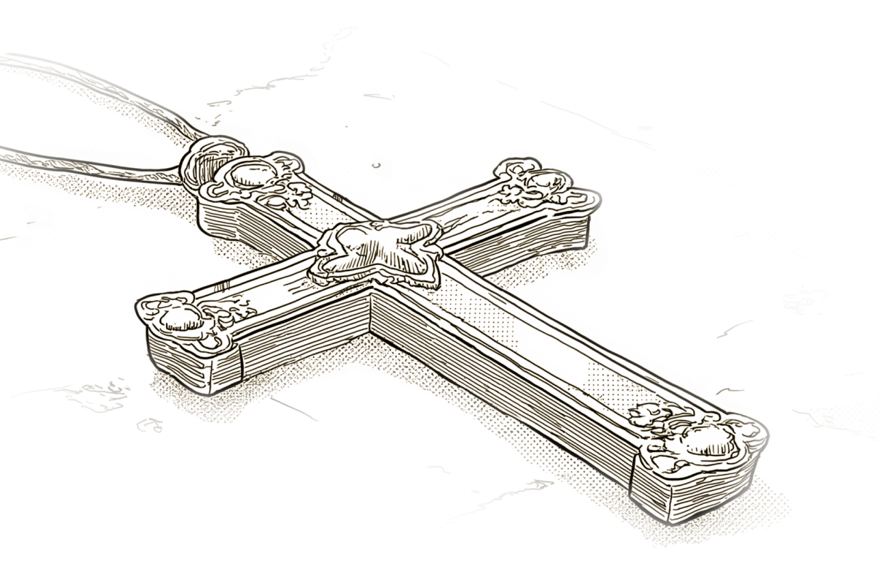
坚船利炮与十字架同在，士兵与修士并行。他们所到之处，土地被重新命名，语言被重新定义。
在墨西哥的高原上，阿兹特克帝国的金字塔静默矗立。
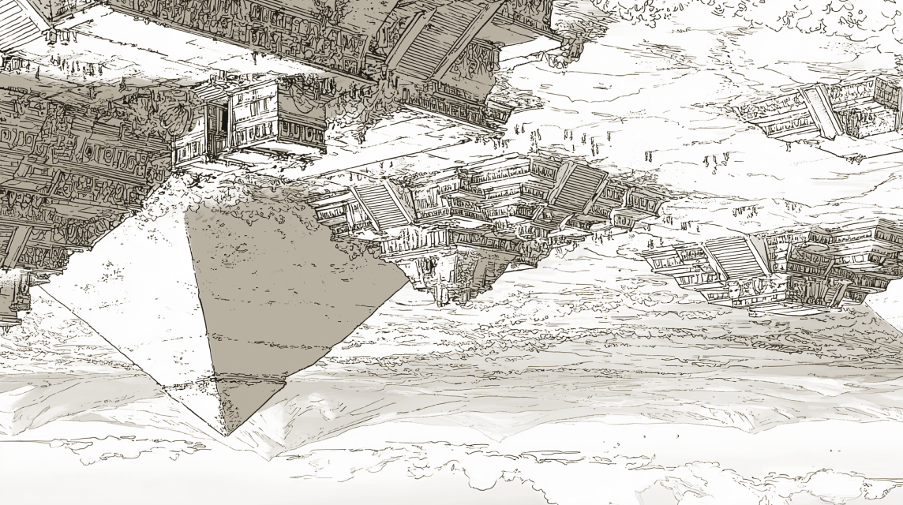
西班牙人看见了神庙上的金饰，也看见了祭坛上的鲜血。
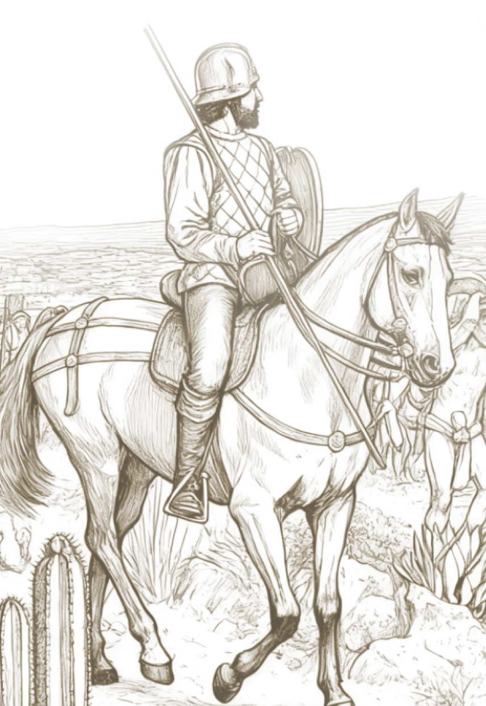
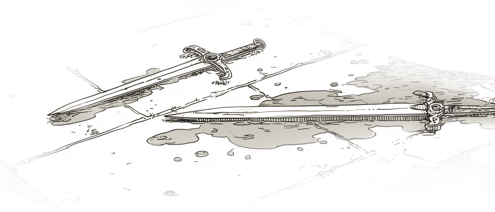
特诺奇提特兰的街道在几周之内被夷为废墟，黄金被熔化，神像被砸碎，名字被重写。
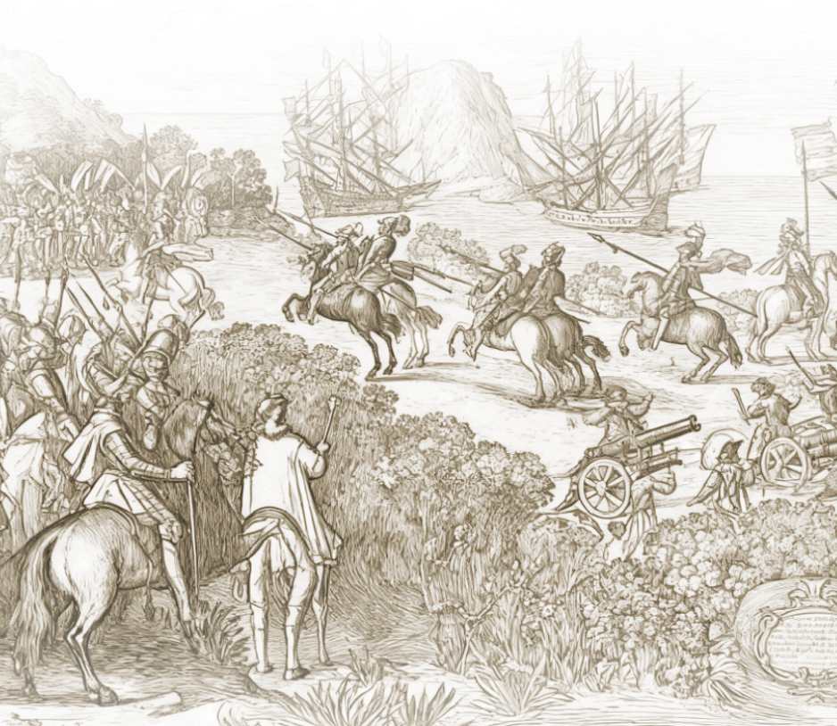
他们宣称自己带来了文明，于是火焰取代了仪式，铁器取代了信仰。
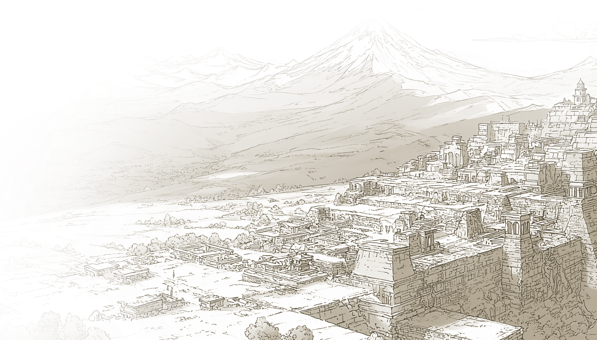
安第斯的群山间，印加的石城屹立云端。
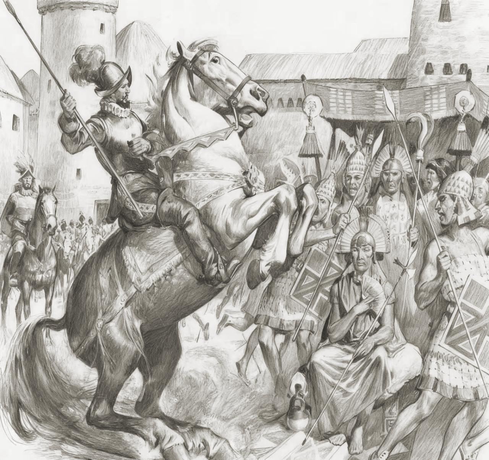
那一天，印加人第一次看见火枪的火光，第一次听见马蹄在石板上轰鸣。
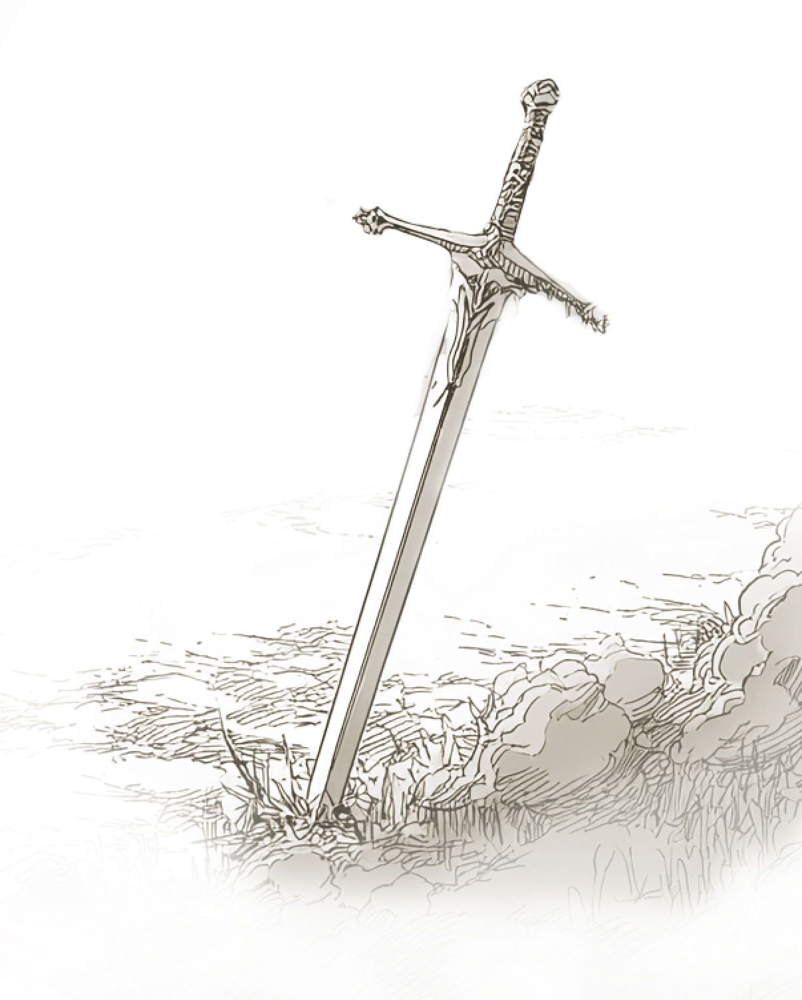
一种他们从未理解过的力量，在数小时内粉碎了数世纪的秩序。
枪炮与铁骑，在狭窄的山谷间制造出前所未有的回声——
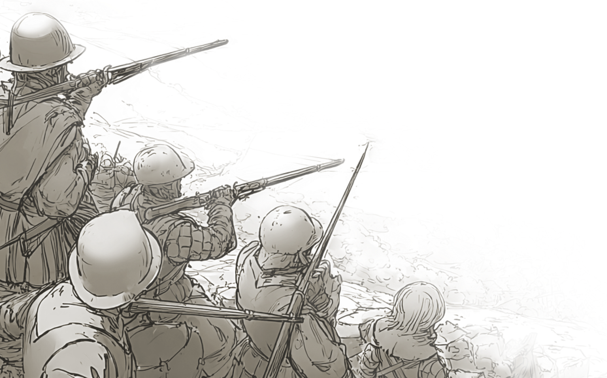
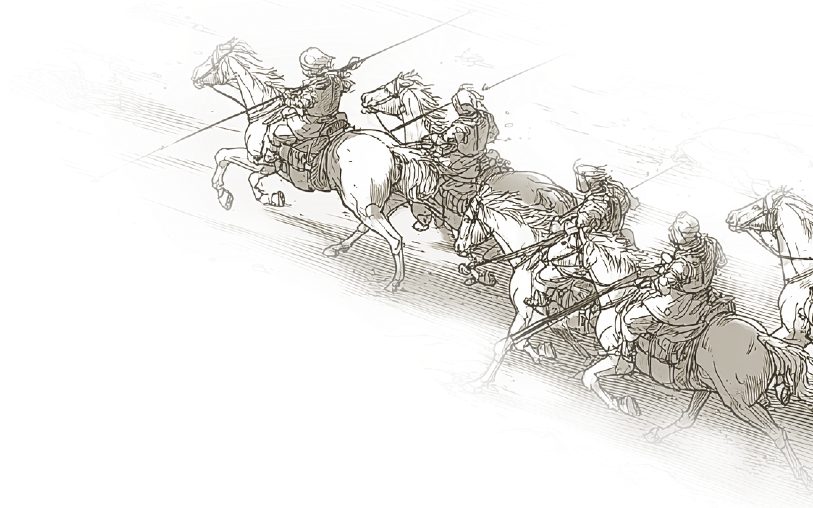
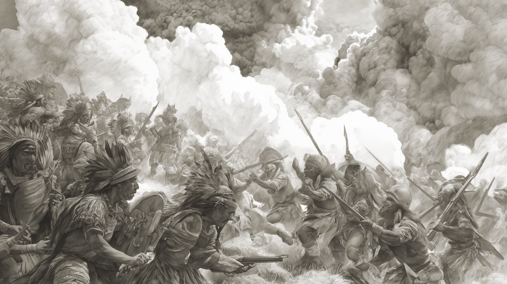
文明的名字被写在新大陆的土地上，而土地，从此不再属于它自己。